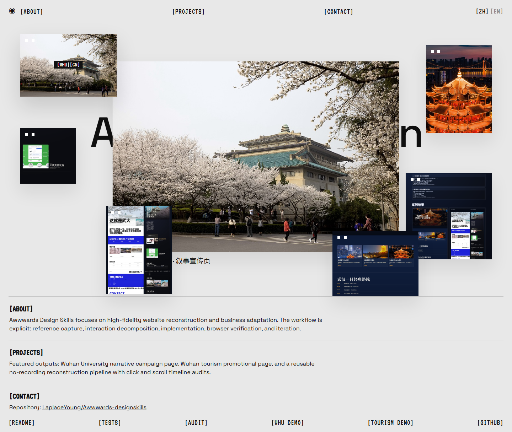
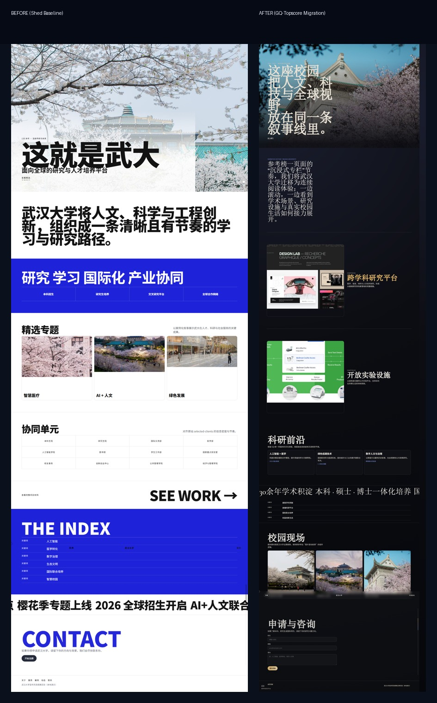
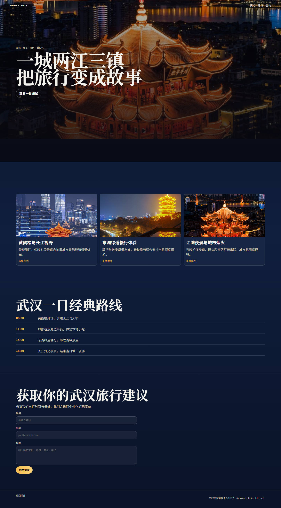

Awwwards Design Skills Studio
 [MOTION][DATA]
[MOTION][DATA]
 [CITY][TOURISM]
[CITY][TOURISM]

[QA][90+]
[AUDIT][MAP]
[LIVE][MCP]
[MOTION][DATA]
[CITY][TOURISM]

[QA][90+]
[AUDIT][MAP]
[LIVE][MCP]Awwwards Design Skills focuses on high-fidelity website reconstruction and business adaptation. The workflow is explicit: reference capture, interaction decomposition, implementation, browser verification, and iteration.
Featured outputs: Wuhan University narrative campaign page, Wuhan tourism promotional page, and a reusable no-recording reconstruction pipeline with click and scroll timeline audits.
Repository: LaplaceYoung/Awwwards-designskills